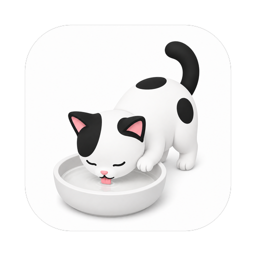

LAP BROWSER CAPTURE
素材采集器设置
连接本机 Lap，设置待整理素材的存储目录与采集标签。首次使用说明请在项目介绍中查看。
连接本机 Lap
先启动 Lap，再让扩展自动查找本机采集服务。
- 1启动 Lap 桌面应用
- 2点击自动检测
- 3仅在提示时粘贴配对 Token
只检测本机 127.0.0.1:47821，不会把数据上传到网络。

LAP BROWSER CAPTURE
连接本机 Lap，设置待整理素材的存储目录与采集标签。首次使用说明请在项目介绍中查看。
先启动 Lap，再让扩展自动查找本机采集服务。
只检测本机 127.0.0.1:47821，不会把数据上传到网络。